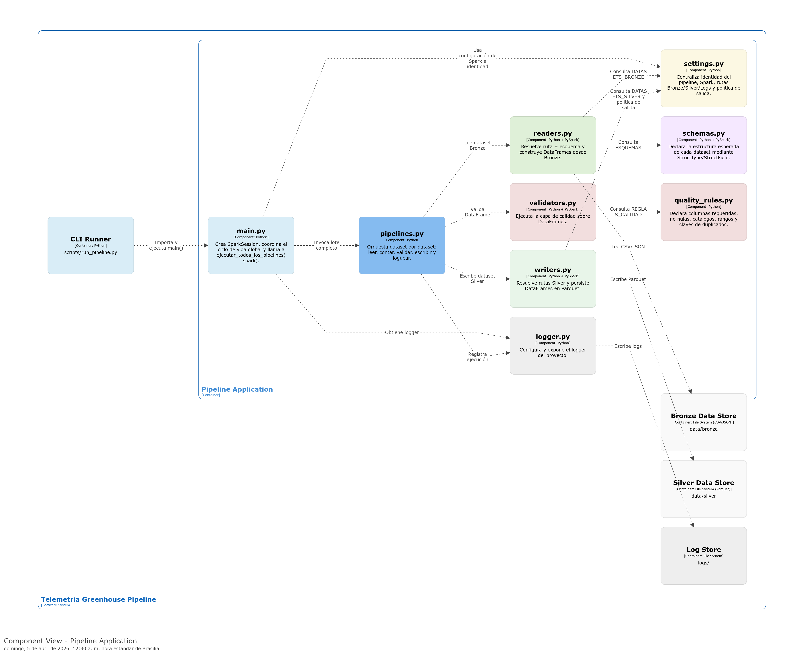
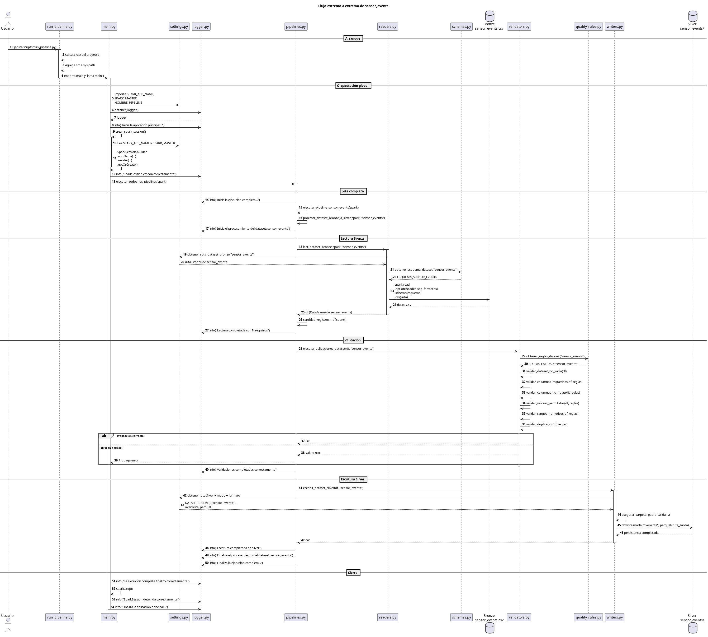

O desafio
Uma comunidade rural precisava monitorar remotamente as condições ambientais e do solo de uma estufa, e controlar dispositivos de irrigação e ventilação. O desafio inicial consistia em integrar sensores, atuadores e sistemas de comunicação para possibilitar o monitoramento e controle remoto. Posteriormente, o projeto evoluiu para um segundo desafio: estruturar, validar e armazenar os dados para facilitar sua análise histórica.
Abordagem e contribuição
O projeto começou em 2023, durante uma Diplomatura em Internet of Things da UTN, por meio de uma experiência colaborativa de desenvolvimento tecnológico para uma comunidade rural. Posteriormente, retomei esse domínio para desenvolver uma solução de Engenharia de Dados com Python e PySpark.
- Projetei a arquitetura IoT com sensores DHT22, TSL2561 e capacitivos de umidade do solo, ESP32, Raspberry Pi, MQTT/Mosquitto, Node-RED e Blynk, contemplando atuadores de irrigação e ventilação.
- Modelei dispositivos, zonas e eventos de sensores e atuadores; preparei dados simulados e informações meteorológicas históricas externas.
- Implementei pipelines batch Bronze → Silver com Python e PySpark, esquemas explícitos, leitores e escritores separados e validações de qualidade por dataset.
- Persisti registros validados em Parquet; adicionei logging de execução e erros e documentei os módulos e sequências do sistema.
Competências demonstradas
O projeto combina compreensão de hardware e comunicações IoT com modelagem de dados, processamento PySpark, validações de qualidade, logging e organização modular do software. Demonstra a evolução técnica da aquisição e supervisão física para a preparação de datasets estruturados para análise.
Evidências e escopo
O repositório documenta cinco pipelines Bronze → Silver desenvolvidos com Python e PySpark, com execuções satisfatórias registradas durante o desenvolvimento e persistência de dados em Parquet. Para testar o processamento, foram utilizados eventos de sensores e atuadores, complementados com informações meteorológicas históricas externas. O projeto também conta com documentação e diagramas de arquitetura.

